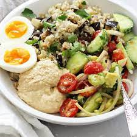

Tomato Rice

Tomato Rice is another meal I discovered
while trying to save money. It is simple, delicious, and packs
a sufficient amount of nutrients.
You can add or remove ingredients
according to your personal taste.
Here are some key ingredients:
Key Ingredients:
- Eggs
- Rice or Quinoa
- Hummus
- cucumbers
- Can of Stewed Tomatos
- Sriracha
- Feta Cheese
You will need and frying pan, and a rice cooker or small pot
for rice/ quinoa.
Process:
- Put rice/ quinoa in the rice cooker along with stewed tomatos, mix
occasionally while cooking
- While rice is cooking, cut up your cucumbers
- Add 2 eggs, dill and milk in a bowl, mix to scramble
- Once rice starts to boil, heat a pan with butter, add egg mixture
- Scramble eggs lightly
- Add tomamto rice first, then on top section your cucumbers, egg and hummus. Top with feta and sriracha
Bon Appetit!
Click to return to Home